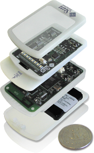

The aim of the Squawk for Sun SPOT project is to deploy the Squawk Java Virtual Machine on the wireless sensor and actuator Sun SPOT device developed at Sun Labs. In this version of the Squawk JVM, the VM runs on the bare ARM-9 hardware and provides low-level operating system support, as well as application isolation (isolates).
The original port of Squawk to the ARM simulator was done by John Nolan in October 2004. The port to run on the Atmel evaluation board and the Sun SPOT device was initially done by John Nolan, John Daniels, and Dave Cleal.
The Squawk for Sun SPOT VM is an interpretive JVM written mainly in the Java language. All of its components; the class loader, the verifier, the transformer, the interpreter, the garbage collector, and the thread scheduler, are written in the Java language. For performance reasons, the interpreter is written in the C language, and then compiled by an optimizing C compiler. The garbage collector used by the Squawk VM is automatically translated from Java to C, for performance reasons.
The
Squawk for Sun SPOT VM uses a split VM architecture in order to save memory
on-device.
Classes to be deployed onto the
device are verified and transformed into Squawk's internal object
representation, which is then saved onto a file called a suite.
Suites are then loaded into the sensors device and are interpreted by
the VM on-device. This allows for a smaller VM to be stored in the
sensor device, as well as faster start-up time for the sensor application (as
suites are resolved collections of Java classes).
Publications
Nik Shaylor (alumnus), Doug Simon (alumnus), Bill Bush (alumnus), Cristina Cifuentes, Derek White, Eric Arseneau, John Nolan (alumnus), John Daniels, Dave Cleal, Duncan Pierce, Rachel Davies (alumnus), John Wilcox, Ivan Moore.
Back to the Squawk Project
Contact: Eric Arseneau